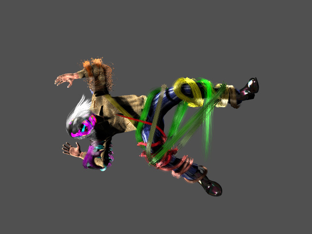
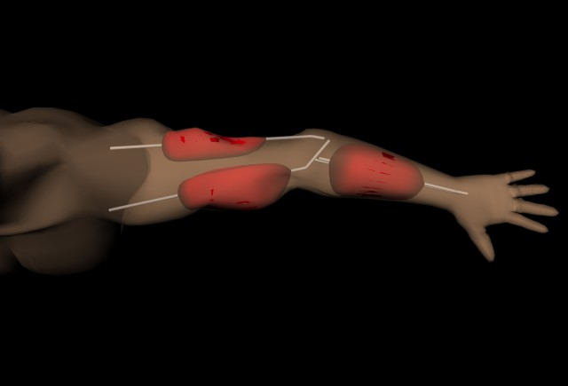
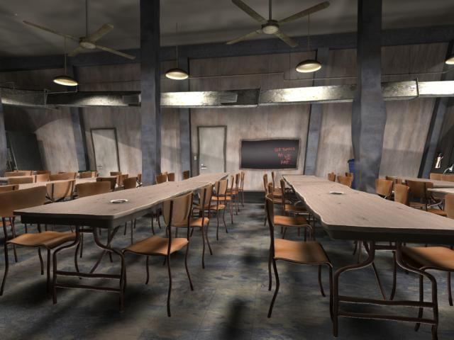
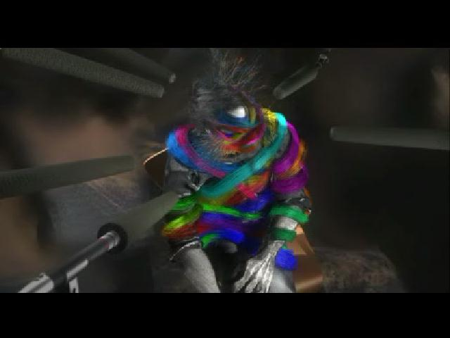
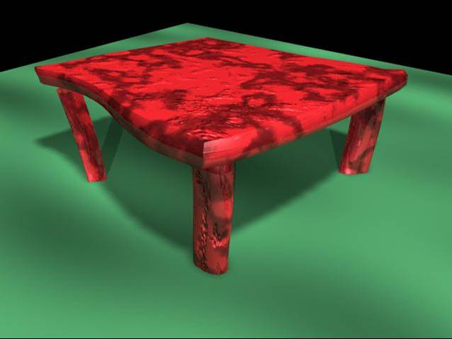
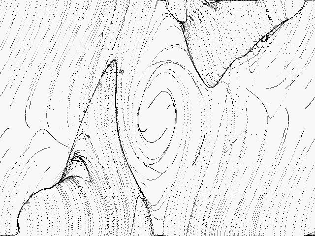

Cords: Geometric Curve Primitives for Modeling Contact. IEEE Computer Graphics and Applications. Vol. 26, No. 3. May/June, 2006. With Karan Singh.

Outside-In Anatomy Based Character Rigging. SCA 2005. With Michael Pratscher, Joe Laszlo, and Karan Singh.

RYAN: Rendering Your Animation Nonlinearly projected. NPAR 2004. With Karan Singh.

Cords: Keyframe Control of Curves with Physical Properties. SIGGRAPH 2004 Sketches. With Karan Singh

Interactive Control of Nonlinear Projection for Complex Animated Scenes. M. Sc. Thesis. University of Toronto. Nov. 2004.

Motion Control for Fluid Animation: Flow Along a Control Path. OSU Undergraduate Honors Thesis. May 2002.
Animating Nonlinear Projections. University of Toronto Computer Science Technical Report CSRG-488. April 2004. With Karan Singh.
Cords: Interactive Modeling of 3D Curves with Physics-Like Properties. University of Toronto Computer Science Technical Report CSRG-486. April 2004. With Karan Singh.
Sketching 3D Scene Projections. Washington Univerity at St. Louis Computer Science Technical Report. March 2004. With Leon Barrett, Cindy Grimm, and Karan Singh.
RYAN: Rendering Your Animation Nonlinearly projected. University of Toronto Computer Science Technical Report CSRG-473. July 2003. With Karan Singh.
patrick coleman dynamic graphics project university of toronto patrick at dgp dot toronto dot edu